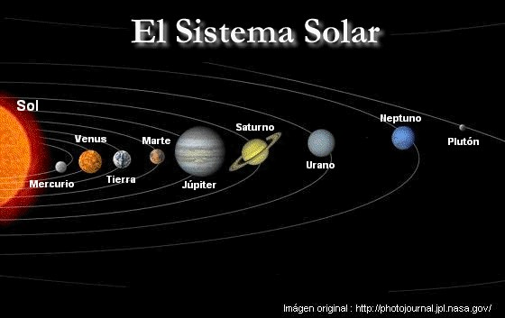
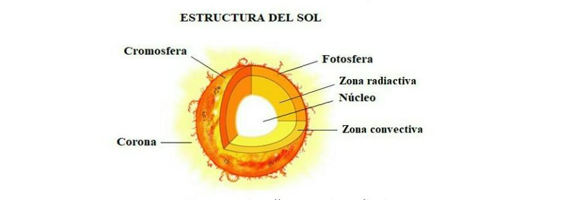
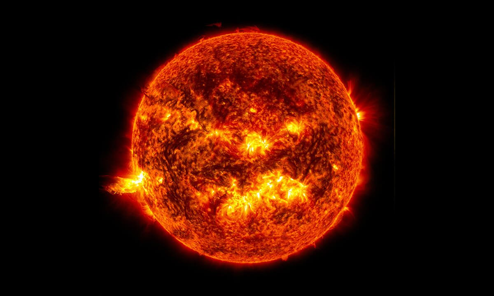

¿Qué es el sol?
Nuestro sol es una estrella enana amarilla —una esfera resplandeciente de hidrógeno y helio caliente— con 4.500 millones de años de edad que está en el centro de nuestro sistema solar. Se encuentra a unos 150 millones de kilómetros (93 millones de millas) de distancia de la Tierra y es la única estrella de nuestro sistema solar. Sin la energía del Sol, la vida tal como la conocemos no podría existir en nuestro planeta natal; su enorme gravedad mantiene unido al sistema solar, haciendo que los planetas, asteroides, cometas y otros objetos permanezcan en órbita a su alrededor. Aunque desde nuestro planeta parece relativamente pequeño, en realidad es enorme: su diámetro es unas 109 veces mayor que el de la Tierra y dentro de él podrían entrar alrededor de 1,3 millones de Tierras.

¿Cómo funciona el sol?
En el interior del Sol ocurre algo extraordinario: produce energía mediante la fusión nuclear. En su núcleo, donde la temperatura alcanza unos 15 millones de °C, los átomos de hidrógeno se unen y forman helio. Este proceso libera una enorme cantidad de energía que finalmente llega al espacio en forma de luz y otras radiaciones. El Sol tiene diferentes partes. Desde el centro hacia afuera encontramos el núcleo, la zona radiativa y la zona convectiva. Su atmósfera está formada por la fotosfera, la cromosfera y la corona. La fotosfera es la capa que vemos como la superficie del Sol y tiene una temperatura aproximada de 5.500 °C.

¿Por qué es tan importante para la tierra?
El Sol es fundamental para nuestro planeta. Su luz y su calor permiten que la Tierra tenga las condiciones necesarias para la vida. También proporciona la energía que impulsa procesos como el clima y el ciclo del agua. Las plantas también necesitan la luz del Sol para realizar la fotosíntesis. Durante este proceso utilizan la energía de la luz, agua y dióxido de carbono para producir su alimento y liberar oxígeno. Por eso, la energía solar también está relacionada con gran parte de las cadenas alimentarias de nuestro planeta.
El Sol cambia contantemente
Aunque podemos verlo como una esfera tranquila en el cielo, el Sol está en constante actividad. En su superficie aparecen las manchas solares, que son zonas más oscuras y algo más frías que las regiones que las rodean. Se producen debido a campos magnéticos muy intensos. También pueden producirse llamaradas solares, que son grandes explosiones de energía. Cuando la actividad del Sol es muy intensa puede producirse una tormenta solar. Estas tormentas pueden provocar hermosas auroras, pero también pueden afectar satélites, comunicaciones por radio y algunos sistemas tecnológicos de la Tierra.
El Sol y la historia
Aunque podemos verlo como una esfera tranquila en el cielo, el Sol está en constante actividad. En su superficie aparecen las manchas solares, que son zonas más oscuras y algo más frías que las regiones que las rodean. Se producen debido a campos magnéticos muy intensos. También pueden producirse llamaradas solares, que son grandes explosiones de energía. Cuando la actividad del Sol es muy intensa puede producirse una tormenta solar. Estas tormentas pueden provocar hermosas auroras, pero también pueden afectar satélites, comunicaciones por radio y algunos sistemas tecnológicos de la Tierra.

¿Cuál será el futuro del Sol?
El Sol todavía tiene mucho tiempo por delante. Actualmente se encuentra aproximadamente a mitad de su vida como estrella. Sin embargo, dentro de unos 5.000 millones de años, habrá utilizado gran parte del hidrógeno de su núcleo y comenzará a cambiar. Se irá haciendo cada vez más grande hasta convertirse en una gigante roja. Después expulsará sus capas exteriores y finalmente quedará una estrella mucho más pequeña llamada enana blanca. Es un proceso que ocurrirá dentro de miles de millones de años, por lo que no es algo que debamos preocuparnos ahora.